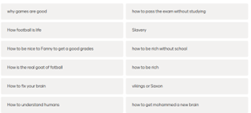
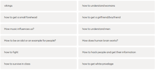
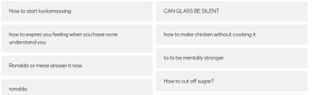

Formål:
Formålet med denne økten er å synliggjøre den faktiske funksjonen en PowerPoint (eller liknende) bør ha når elever skal presentere et tema. Jeg opplever at PowerPoint blir en hindring eller et verktøy elever lener seg mye på. For eksempel at elevene har altfor lange notater på PP som de står og leser opp. Spesielt synes dette i noen av gruppene jeg har hatt i FOR og E-klasser siden disse elevene kommer fra andre skolesystemer.
Håpet er at elevene skal forstå at presentasjonen i seg selv kun skal være et hjelpemiddel og at det er det de sier og måten de formidler tema på som er viktig i skolesammenheng.
Dette er også med tanke på eventuell muntlig eksamen til våren. Et annet aspekt er at elevene må forberede seg mer på innholdet og kunne stoffet før de skal presentere det.
Gjennomføring:
Planen er at jeg starter timen ved å gi elevene mulighet til å velge hva jeg skal undervise om. Jeg bruker Mentimeter, slik at de kan skrive inn forslag selv. Her kan man også bruke Learnlab som er godt egnet til dette. Disse forslagene blir sendt inn anonymt.
Videre lar jeg nettsiden www.gamma.app generere en presentasjon for meg.
Denne prosessen får elevene ta del i.
Så skal jeg presentere det som kommer opp. Til slutt skal elevene få prøve selv i grupper og de kan velge et tema de har god kontroll på.
Resultat:
Elevene leverte følgende forslag til presentasjonen:
 |
 |
 |
Vi landet på tema: dating i Norge. Jeg ba OpenAi skrive en tekst med følgende ledetekst: «can you write a factual text about dating in Norway. Approximately 1000 words.” Denne teksten limte jeg inn i Gamma.app og lot den lage en presentasjon som jeg formidlet til klassen. Etter presentasjonen spurte jeg elevene hva de tenkte formålet med dette var.
Videre ba jeg elevene lage en presentasjon selv i Gamma.app om et tema de kunne litt om. To av elevene presenterte sine tema. En elev presenterte tema om Ghana og Somalia. Hun forholdt seg lite til presentasjonen da hun snakket om Ghana og brukte mest tid på bildene og forklarte klassen om landet. Når hun snakket om Somalia ble hun mer usikker og mer avhengig av det som stod på sidene i presentasjonen. Her syns jeg poenget kom godt frem. Etter presentasjonen diskuterte elevene hvorfor eleven var så god på å snakke om Ghana og kom frem til at det var fordi hun kunne så mye om landet. De var alle enige om at presentasjonen var mye bedre når eleven hadde kunnskap om tema fra før.
Til slutt kom elevene selv frem til at det ikke handler så mye om hvordan presentasjonen ser ut, og at den kun er der som en støtte for dem og for å lage struktur.
Jeg fortalte også elevene at jeg tidligere har brukt Gamma.app i en annen setting i klassen og ingen visste når jeg hadde gjort det. Noe som kanskje igjen poengterte viktigheten av kunnskap, selvtillit og formidlingsevne fremfor å lese opp tekst fra en presentasjon.
Elevene får bruke KI i engelsk og samfunnsfag så lenge de kan stoffet godt selv. Det er ikke alltid nødvendig å bruke masse tid på en PowerPoint hvis man ikke kan tema.
Alt i alt var dette et spennende eksperiment og jeg tror elevene syns det var gøy å prøve selv. Poenget med øvelsen må nok gjentas mange ganger, men jeg tror dette kan være en øvelse som kan hjelpe elevene å bruke KI på en mer fornuftig måte.